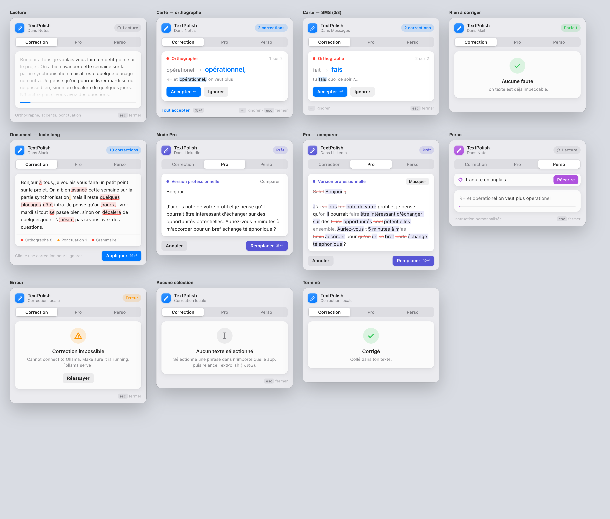

Le problème
Pour corriger un message, on copie le texte, on ouvre un correcteur dans le navigateur, on colle, on recopie le résultat, puis on revient. Cinq gestes pour une virgule. Les outils qui évitent ce détour, comme Grammarly, envoient le texte sur leurs serveurs.
Je voulais l'inverse : rester dans l'app, ne rien envoyer en ligne, et que la correction arrive avant qu'on ait eu le temps de se demander quel mode choisir.
Le parcours
Chaque étape retire une décision à l'utilisateur.
- Sélectionner, puis ⌥⌘G. Fonctionne dans Notes, Mail, Slack ou TextEdit. Le presse-papiers de l'utilisateur est sauvegardé puis restauré.
- Lecture. La fenêtre s'ouvre sous la sélection (position lue via l'API d'accessibilité de macOS) et le texte scintille pendant que le modèle lit.
- Correction automatique. Le mode Correction démarre seul : orthographe, accents, ponctuation, sans reformuler. Pro et Perso restent à un raccourci (⌘2, ⌘3).
- Une décision par faute. ↵ accepte, ⇥ ignore, ⌘↵ accepte tout.
- Collé. Le texte reconstruit avec les seules corrections acceptées remplace la sélection, et la fenêtre disparaît.
Une fenêtre qui s'adapte au texte
Le même résultat ne se lit pas de la même façon selon sa longueur. Après la réponse du modèle, le diff est découpé en corrections typées (orthographe, accent, majuscule, grammaire, ponctuation, reformulation), puis l'app choisit la vue.
Texte court, trois fautes au plus : une carte par correction, avant → après, avec le contexte.
Texte long : le texte entier, corrections surlignées par type. Un clic en annule une.
Pro et Perso changent toute la phrase : une seule proposition et un bouton Comparer.
Une coche, « Aucune faute », et la fenêtre se ferme seule.

design/preview.html).

Quatre versions de la même fenêtre
Chaque version vient d'un retour en utilisation réelle, captures à l'appui.
Un panneau de 420 × 520 au centre de l'écran : choisir un mode, cliquer sur Repolir, puis le texte était collé sans relecture.
Trop de décisions avant de voir le moindre résultat, et aucun contrôle sur ce qui était collé.
Un diff barré/surligné avec Accepter et Réviser, et une fenêtre ancrée sous la sélection.
Il fallait encore choisir un mode avant que quoi que ce soit ne se passe.
Fenêtre compacte par défaut, correction lancée dès l'ouverture, modes accessibles sans déplier.
Le mode « décontracté » reformulait des phrases au lieu de seulement corriger : un problème de modèle, pas d'interface (voir plus bas).
Une carte par correction façon Grammarly, flou natif de macOS, hauteur qui suit le contenu, vues selon la longueur du texte, clavier en premier.
Version actuelle.
Ce que j'ai écarté
Le soulignement rouge en temps réel de Grammarly était tentant. J'ai étudié l'API d'accessibilité de macOS avant de m'y lancer, et trois obstacles concrets m'ont fait garder le déclenchement au raccourci :
Impossible de lire la position du curseur quand rien n'est sélectionné (un bug Apple connu). Une fonction clé (AXValueGetValue) n'est pas exposée par PyObjC. Et beaucoup d'apps Electron n'exposent pas leur texte de façon fiable. Les alternatives à Grammarly qui fonctionnent dans toutes les apps Mac utilisent d'ailleurs, elles aussi, un raccourci.
Choisir le modèle
Le modèle tourne sur un MacBook M2 avec 16 Go de RAM, donc il doit être petit. Cinq séries de tests sur un corpus FR/EN, notées par un modèle juge, ont guidé les choix.
| Constat | Effet sur le produit |
|---|---|
gemma3:1b ne voit pas que | Le mode Correction passe sur ministral-3:3b, au prix d'environ 2,7 s de plus. |
ministral-3:3b invente un e-mail entier en mode Pro à partir de deux propositions. | Pro reste sur gemma3:4b. |
| Gemma 4 « réfléchit » par défaut sur Ollama : 51,6 s au lieu d'environ 1 s. | Écarté ; documenté pour l'avenir ("think": false). |
Le modèle remplace ' par ’ et ajoute des espaces insécables. | Ces différences ne sont plus montrées comme des corrections. |
Tester en conditions réelles
Plutôt que de juger sur des maquettes, j'ai piloté la vraie app : du texte dans TextEdit, un raccourci envoyé comme un vrai clavier (événements HID), puis une capture de la fenêtre. Ce protocole a fait remonter des bugs qu'aucun test unitaire ne voyait.
La copie échouait par intermittence
Le raccourci se déclenche pendant que ⌥ est encore enfoncé, donc la copie simulée devenait ⌥⌘C (« copier le style ») et ne copiait rien. L'app attend désormais que les touches soient relâchées.
Trois copies de l'app répondaient au raccourci
Chaque lancement ajoutait une instance. Un verrou garantit désormais qu'une seule tourne.
⌘2 ne marchait pas sur un clavier AZERTY
La touche 2 y produit « é ». Les raccourcis lisent maintenant la touche physique.
La version Windows plantait au démarrage
Un import invalide en PyQt6, trouvé en affichant le panneau Windows hors écran depuis le Mac.
Ce que j'en retiens
Retirer une décision vaut souvent mieux qu'ajouter une option : la plus grosse amélioration a été de lancer la correction sans demander de mode. Une interface ne compense pas un mauvais modèle : le bug « opérationel » se réglait en changeant de modèle, pas en ajustant l'écran. Et une interface se juge en la faisant fonctionner pour de vrai, avec un vrai clavier et une vraie app à côté.